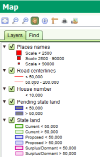
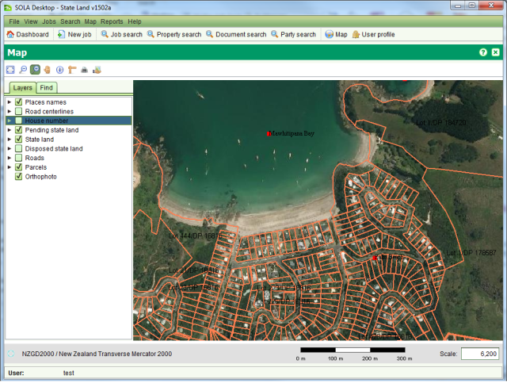

The Layers tab identifies the layers of geospatial data that can be displayed in the map. You can show or hide these layers by checking or clearing the checkbox next to the layer name.

SOLA Map Viewer Layers Tab
By clicking the triangle beside each layer name you can also see the symbology used to illustrate the geospatial data at different map scales. For example, when the map scale is below 2,500, Place names will be illustrated with a large red square. Between 2,500 and 90,000 a medium red square is used and above 90,000 a small red square. Using the map scale to control the layer symbology ensures the map does not become overly crowded with detail which might otherwise impair navigation or comprehension of the information displayed by the map.
The layers available for SOLA State Land include
|
Illustrates the approximate location of notable geographic features such as towns, headlands and bays. |
|
Shows the location of road centrelines |
|
Displays the house number or street number of each parcel |
|
New state land parcels that have been created using the Create or Change Parcels task on a job that has yet to be approved. |
|
Illustrates the location of parcels that are owned or managed by the state. |
|
Illustrates the location of parcels that were once owned or managed by the state but have since been disposed. |
|
Shows the location of road areas indicating the road width. |
|
Illustrates the location of parcels associated with recorded property. |
|
Aerial photograph(s) that have been corrected for lens distortion, camera tilt and topography to ensure they have a uniform scale and are suitable for map display. |

Orthophoto layer
Note that the layers can be reconfigured to match those required by the state land agency.